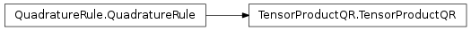
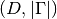
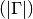
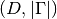
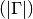

TensorProductQR¶
About the TensorProductQR class¶
The WaveBlocks Project
@author: R. Bourquin @copyright: Copyright (C) 2010, 2011, 2012, 2013, 2014 R. Bourquin @license: Modified BSD License
Inheritance diagram¶

Class documentation¶
- class WaveBlocksND.TensorProductQR(rules, options={})¶
This class implements the construction of high dimensional quadrature rules from one-dimensional ones by taking tensor products.
- __init__(rules, options={})¶
Initialize a TensorProductQR instance.
Parameters: rules – A list of QuadratureRule subclass instances. Their nodes and weights will be used to compute the tensor product.
- construct_rule()¶
Compute the tensor product of the given quadrature rules.
Note
This is an internal method and there should be no reason to explicitely call it manually.
Returns: The nodes  and weights
and weights  of the tensor product quadrature rule. The array of all
nodes has a shape of  and the
array of weights is of shape .
of the tensor product quadrature rule. The array of all
nodes has a shape of  and the
array of weights is of shape .
- get_description()¶
Return a description of this quadrature rule object. A description is a dict containing all key-value pairs necessary to reconstruct the current instance. A description never contains any data.
- get_dimension()¶
Returns: The space dimension  of the quadrature rule.
of the quadrature rule.
- get_nodes(flat=True, split=False)¶
Return the quadrature nodes
.Parameters: - flat (Boolean, default is True.) – Dummy parameter for API compatibility with Grids.
- split (Boolean, default is False.) – Dummy parameter for API compatibility with Grids.
Returns: An ndarray containing the quadrature nodes
.
- get_number_nodes()¶
Returns: The number of quadrature nodes denoted by  that are
part of this quadrature rule
that are
part of this quadrature rule  .
.
- get_weights()¶
Returns the quadrature weights
.Returns: An ndarray containing the quadrature weights .